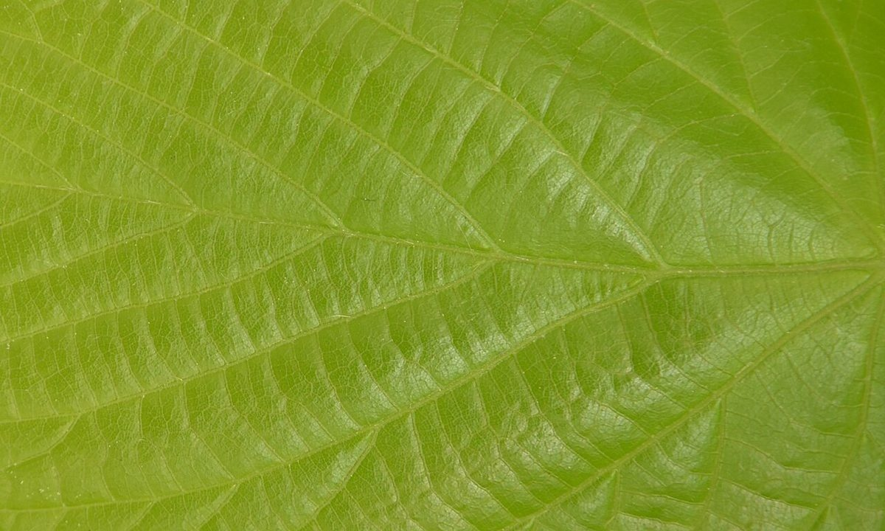
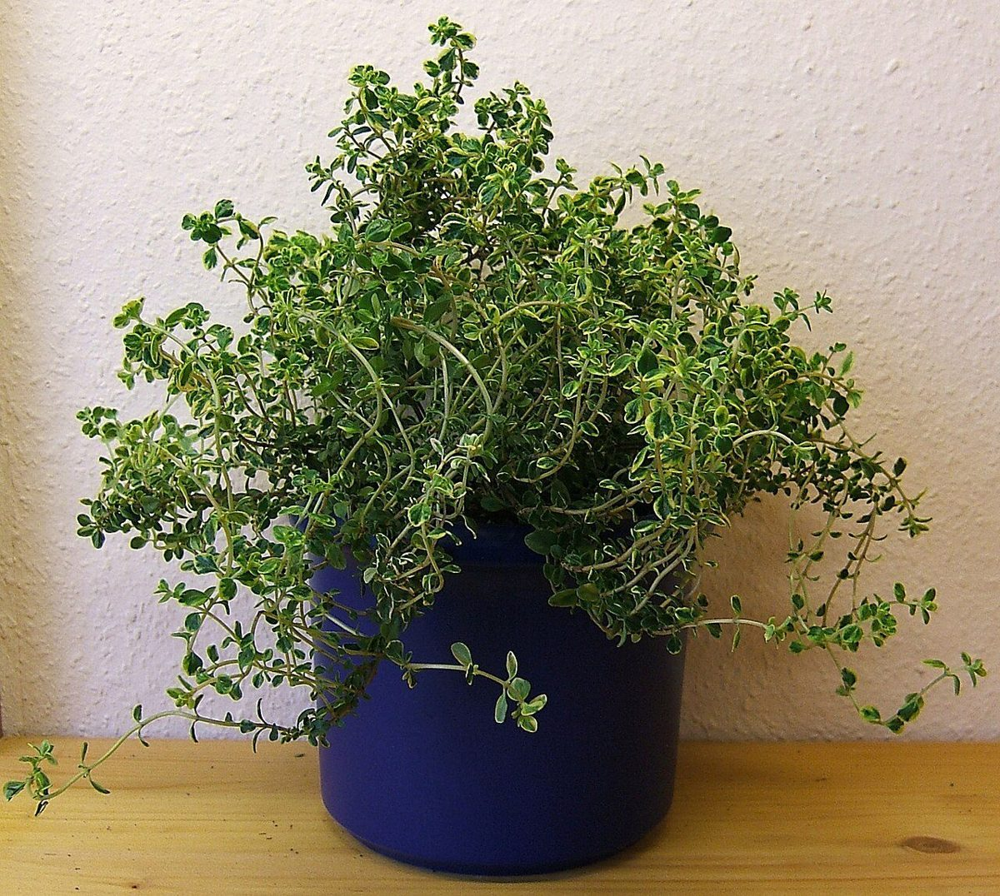
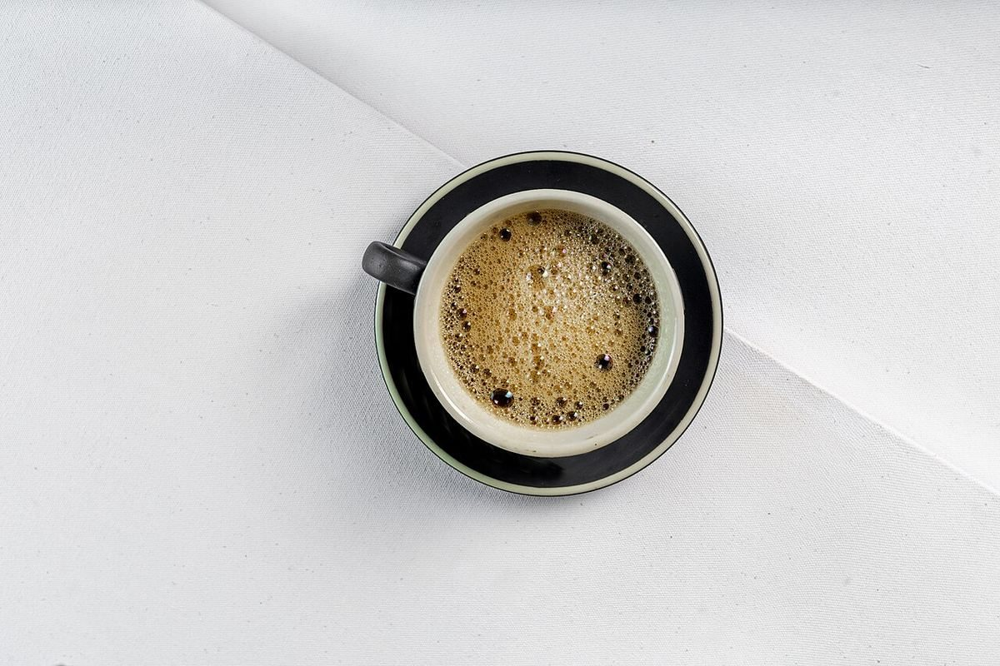

制作側の連想
OLIVE から O を抜くと、LIVE。
店名の由来は分かりません。制作側は、つづりの先頭の「O」を取ると「LIVE」が残ることに気づき、このページを「O の丸いもの」と「L・I・V・E の4文字」に分けて並べてみました。5つのページがそれぞれ O・L・I・V・E に対応しています。お店の理念や由来とは無関係な、制作側の連想です。
O
丸いものを集めた O
写真は秋田市のものではありません。丸いかたちで選んだ、国外・撮影地不明のフリー素材です。


L I V E
4文字のイメージ
- LLeaf

L:Leaf(葉) - IInner

I:Inner(木の内側) - VVerde

V:Verde(緑) - EEspresso

E:Espresso(真上から)
Leaf(葉)・Inner(内側)・Verde(緑)・Espresso は制作側が当てた単語で、お店の提供内容を示すものではありません。
ご案内
お店のこと(確認できたものだけ)
| 所在地 | 〒011-0905 秋田県秋田市寺内神屋敷１３−２４ |
|---|---|
| 電話 | なし |
| 営業時間 | 準備中 |
| 定休日 | 準備中 |
| ご予約 | 準備中 |
| 駐車場 | 準備中 |
| SNS | Instagram @olive_cafe.akita |